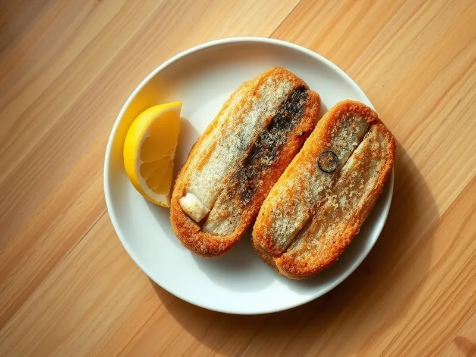

Фото: Иллюстрация ИИ, Cloudflare Workers AI
Скумбрия жареная на сковороде
Куски скумбрии в мучной обвалке с хрустящей корочкой
25 мин3 порц.476 ккал на порциюБ 37 · Ж 33 · У 7Русская кухня
Продукты на 3 порц.
- Скумбрия2 шт
- Мука пшеничная2 ст. л.
- Растительное масло1 ст. л.
- Лимон по желанию0,5 шт
- Соль1 ч. л.
- Перец чёрный молотый2 щеп.
Как готовить
- Разморозьте скумбрию, отрежьте голову и хвост, выпотрошите и промойте, удалите тёмную плёнку внутри.
- Нарежьте рыбу поперёк кусками толщиной 3-4 см, посолите и поперчите.
- Обваляйте куски в муке и выложите в разогретое масло.
- Жарьте на среднем огне по 5-6 минут с каждой стороны до золотистой корочки. Рыба готова, когда мясо у хребта белое, без розового.
- Полейте лимонным соком перед подачей.
Совет. Скумбрия сама жирная, поэтому масла нужно совсем немного. Подайте с квашеной капустой или солёным огурцом.